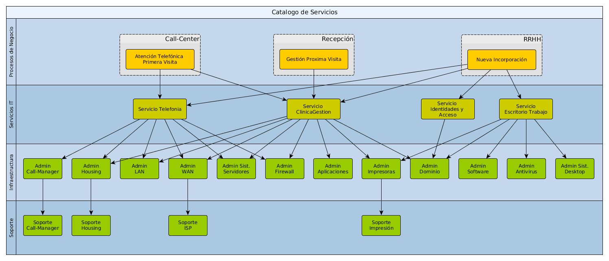

Semana 10: Gestión de servicios — Estrategia del servicio
En esta semana abordamos la gestión de servicios desde la perspectiva estratégica: cómo definir la propuesta de valor de los servicios de TI, diseñar portafolios y catálogos, y establecer políticas, SLAs y métricas que conecten servicios con resultados de negocio.

Figura: Componentes clave de la Estrategia del Servicio — valor, cartera, catálogos y modelos de entrega.
Objetivos de aprendizaje
Entender los principios de la Gestión de Servicios y su rol en la entrega de valor.
Aprender a definir la Estrategia del Servicio: proposición de valor, segmentación de usuarios y modelos de entrega.
Diseñar y mantener un Service Portfolio y un Service Catalog operativo.
Definir SLAs, OLAs y KPIs que midan calidad y beneficio de los servicios.
Conocer procesos clave (Service Strategy, Service Design, Service Transition, Service Operation, Continual Improvement).
Contenido
1. Introducción: ¿Qué es la Gestión de Servicios?
La Gestión de Servicios organiza personas, procesos y tecnología para entregar servicios que aporten valor al negocio y a los usuarios. Su foco no es solo operar tecnología, sino asegurar resultados (outcomes) y experiencias (experience).
Servicio = medio para entregar valor (recursos + procesos + tecnología + acuerdos).
Enfoque en resultados, no solo en actividades técnicas.
Importancia de alinear oferta de servicio con necesidades y estrategia empresarial.
2. Estrategia del servicio: proposición de valor y segmentación
La Estrategia del Servicio define qué servicios ofrecer, a quién y cómo se medirán los resultados.
Propuesta de valor: qué problema del negocio resuelve el servicio y qué beneficios entrega.
Segmentación de clientes/usuarios: identificar perfiles y expectativas (SLA/UX diferenciados).
Modelos de entrega: centralizado, federado, gestionado por terceros (outsourcing), o híbrido.
Política de precios internos: showback/chargeback para transparencia de costos.
3. Service Portfolio y Service Catalog
Diferencia entre portfolio (visión estratégica y lifecycle del servicio) y catálogo (oferta operativa consumible por usuarios).
Service Portfolio: Pipeline, Active, Retired — gestión del ciclo de vida y priorización de inversiones.
Service Catalog: descripciones, SLAs, requisitos, puntos de contacto y flujos de solicitud.
Mapeo servicios → aplicaciones → infra → dependencias → costes.
4. SLAs, OLAs y acuerdos de soporte
Acuerdos claros definen expectativas y responsabilidades entre TI, unidades de negocio y proveedores.
SLA: acuerdos entre proveedor de servicio y cliente (niveles de disponibilidad, tiempos de respuesta).
OLA: acuerdos internos entre equipos que soportan el SLA.
Penalizaciones y recompensas: cláusulas para asegurar cumplimiento o incentivos.
Métricas típicas: disponibilidad %, MTTR, % de SLA cumplidos, tasa de reabiertos.
5. Procesos y ciclo de vida del servicio
La gestión de servicios se apoya en procesos ordenados a lo largo del ciclo de vida del servicio.
Service Strategy: definición y priorización de servicios.
Service Design: diseñar servicios, procesos, SLAs, arquitectura y seguridad.
Service Transition: despliegue controlado, gestión de cambios y pruebas.
Service Operation: operación diaria, incident & request fulfillment, monitorización.
Continual Service Improvement: medir, analizar y mejorar continuamente.
6. Roles y responsabilidades
Definir roles claros evita solapamientos y mejora la gobernanza del servicio.
Service Owner: propietario del servicio y responsable del rendimiento y valor.
Service Level Manager (SLM): administra SLAs y revisa performance.
Service Desk: primer punto de contacto y coordinador de incidentes/solicitudes.
Process Owners: responsables de procesos como incident, change, problem.
7. Medición y KPIs
Elegir indicadores accionables que reflejen la calidad del servicio y su impacto en el negocio.
KPI operativos: % SLA cumplidos, MTTR, tiempo medio entre fallos (MTBF), % de cambios exitosos.
KPI de negocio: tiempo de entrega al cliente, conversión relacionada a servicios digitales, NPS/CSAT.
KPI financieros: Cost per Service, TCO, ahorro por automatización.
Reportes ejecutivos y dashboards para comité de servicio y gerencia.
8. Herramientas y técnicas recomendadas
Plataformas que facilitan la operación y gobernanza de servicios.
Service Desk / ITSM: ServiceNow, Jira Service Management, Freshservice, BMC Remedy.
Monitorización & Observabilidad: Prometheus + Grafana, Datadog, New Relic.
CMDB: mantener información de configuración y dependencias.
Automatización: runbooks, playbooks y orquestación para request fulfillment y remediación.
9. Roadmap práctico (resumen)
Diagnóstico de servicios (2–3 semanas): inventario, criticidad, mapas de dependencias.
Definir estrategia & portfolio (3–5 semanas): propuestas de valor, segmentación y pricing interno.
Implementar Service Catalog + SLAs (4–8 semanas): catálogo inicial, SLAs y dashboards.
Optimizar operación y CI (continuo): automatización, mejora de KPIs y retroalimentación del negocio.
10. Laboratorio sugerido (entregable mínimo)
Título: Estrategia del Servicio y Catálogo Operativo
Entregables mínimos:
Documento: Estrategia del Servicio (propuesta de valor, segmentación, modelo de entrega y pricing interno).
Service Catalog inicial: fichas de servicio con SLA, owner, dependencias y proceso de solicitud.
Matriz de priorización del portfolio (valor vs. riesgo vs. costo).
Plantilla SLA y OLA (ejemplos con métricas y niveles de servicio).
Dashboard Excel / Power BI con KPIs operativos y de negocio.
Materiales de estudio
Lectura: Fundamentos de Gestión de Servicios
Resumen de prácticas, lifecycle del servicio y ejemplos de SLAs y catálogo.
En la Semana 10 trabajamos la Gestión de Servicios con foco en la Estrategia del Servicio: definir qué servicios ofrecer, cómo medir su impacto y cómo garantizar la calidad mediante SLAs, procesos y roles. El laboratorio propone la creación de una estrategia de servicio, catálogo operativo y un dashboard de KPIs para demostrar creación de valor.
¿Quieres que genere ahora el documento de Estrategia del Servicio, la plantilla de Service Catalog y la plantilla SLA (en .docx/.xlsx) listos para descargar? Puedo crearlos y empaquetarlos para tu repositorio.